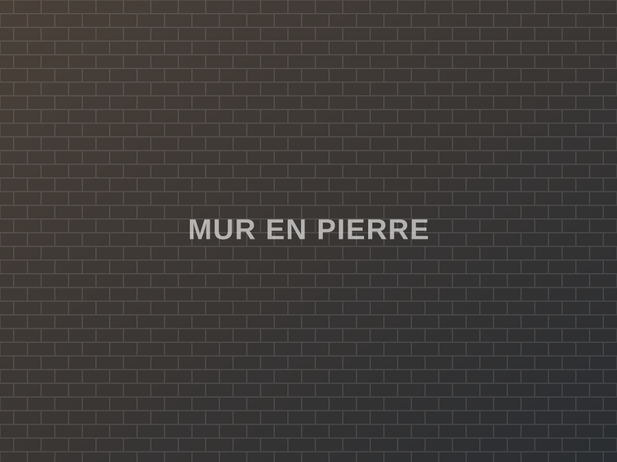
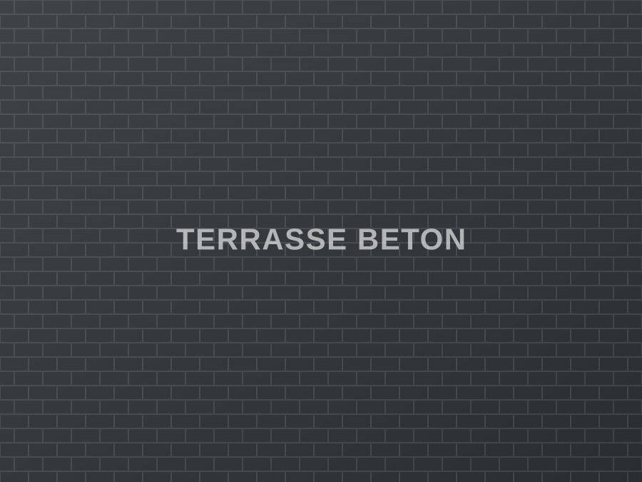
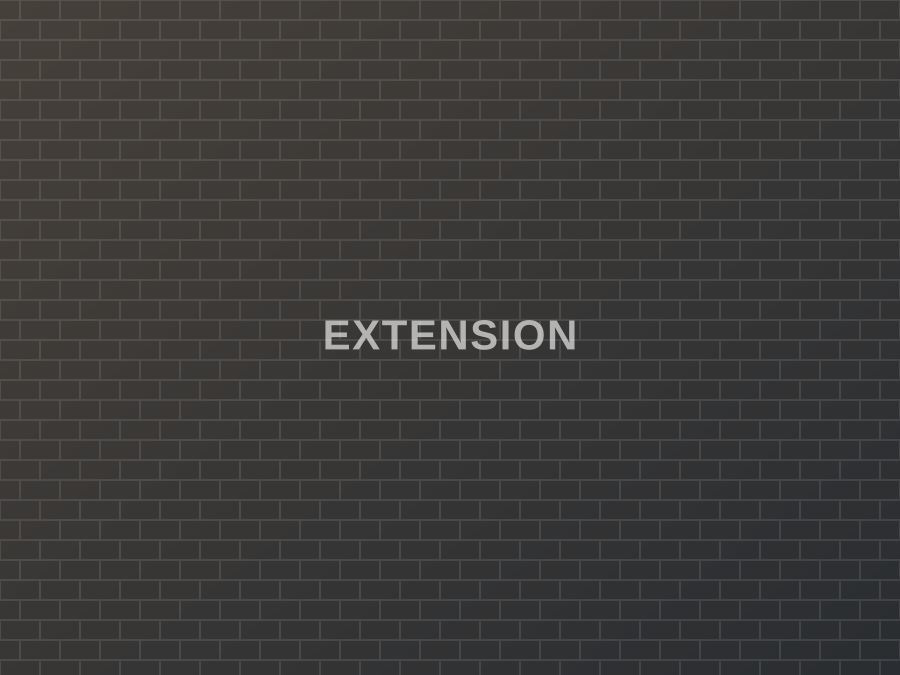
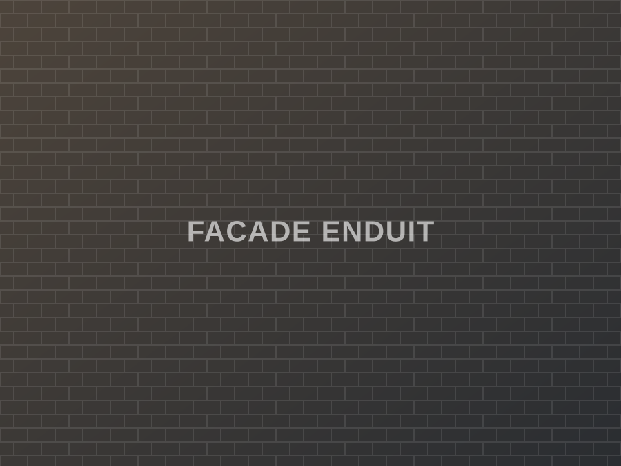
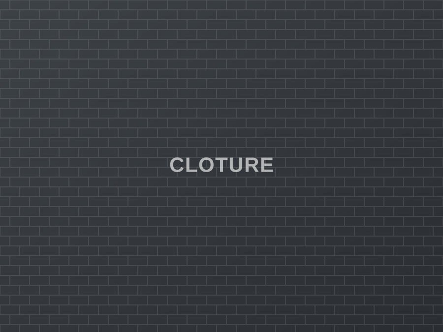
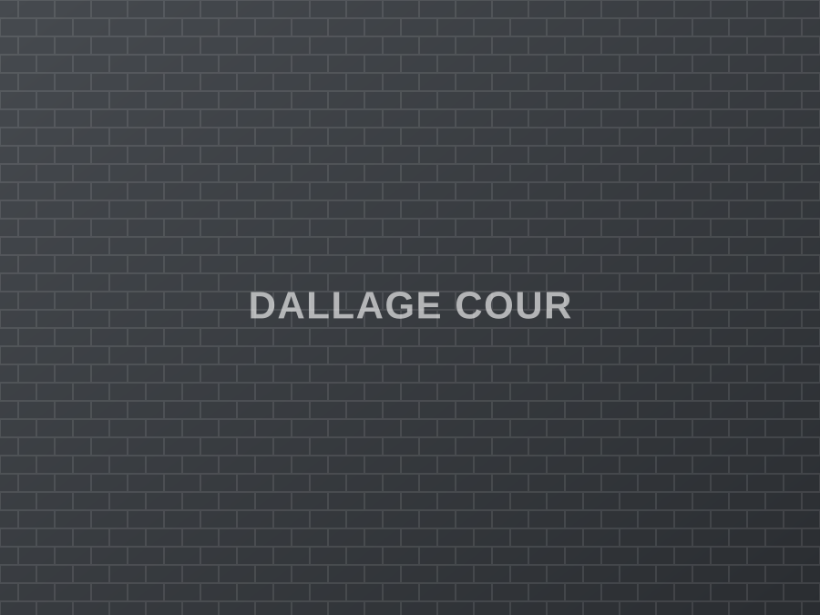

Gros œuvre & fondations
La structure de votre projet, réalisée dans les règles de l'art et conforme aux DTU.
- Terrassement et semelles filantes
- Élévation de murs, agglos et briques
- Dalles béton et planchers
★★★★★ Plus de 400 chantiers livrés en Nouvelle-Aquitaine
Maçonnerie générale, gros œuvre, pierre et rénovation. Une équipe d'artisans qui pose un prix clair, tient les délais annoncés et laisse le chantier propre.
Du terrassement à l'enduit de finition, nous intervenons chez les particuliers, les syndics et les entreprises, en neuf comme en rénovation.
La structure de votre projet, réalisée dans les règles de l'art et conforme aux DTU.
Pierre sèche, moellons, joints à la chaux : le savoir-faire traditionnel du bâti ancien.
Des extérieurs plans, drainés et durables, prêts à recevoir la finition de votre choix.
Gagner des mètres carrés sans déménager, du plan de masse à la mise hors d'eau.
Protéger et embellir : ravalement complet ou reprise ponctuelle, teinte au choix.
Délimiter, retenir, sécuriser — avec des ouvrages calculés pour durer.
Vous savez dès le départ qui intervient, quand, et pour quel montant.
Vous décrivez votre projet par téléphone ou via le formulaire. On vous rappelle sous 24 h ouvrées.
Déplacement gratuit pour prendre les mesures, évaluer les contraintes et vous conseiller.
Un document clair, poste par poste, avec les quantités, les matériaux et le planning. Prix ferme.
Une équipe dédiée, un point d'avancement régulier, un chantier nettoyé et une réception signée.
Quelques exemples de ce que nous livrons. Sur demande, nous vous mettons en relation avec des clients pour qui nous avons travaillé.






L'entreprise est dirigée par un maçon qui est encore sur les chantiers. C'est la même personne qui chiffre votre devis, qui suit les travaux et que vous appelez si quelque chose ne va pas.
« Devis reçu en deux jours, chantier commencé à la date prévue et terminé avec un jour d'avance. La terrasse est impeccable, les niveaux sont parfaits. »
« Ils ont repris un mur en pierre que deux entreprises avaient refusé de toucher. Travail de restauration très soigné, joints à la chaux magnifiques. »
« Sérieux, ponctuels et de bon conseil sur les matériaux. Le prix annoncé est celui que j'ai payé, à l'euro près. Je recommande sans hésiter. »
Le déplacement pour l'établissement du devis est gratuit dans toute cette zone. Au-delà, contactez-nous : selon la nature du chantier, nous étudions la demande.
12 route des Carrières
00000 Villeneuve
France
Horaires
Lundi – vendredi : 7 h 30 – 18 h
Samedi : sur rendez-vous
Dimanche : fermé
Oui. La visite sur site, les métrés et l'établissement du devis détaillé sont entièrement gratuits et sans engagement, dans toute notre zone d'intervention.
Comptez généralement 3 à 8 semaines entre la signature du devis et l'ouverture du chantier, selon la saison et l'ampleur du projet. Les petites interventions et les urgences (fissure, effondrement partiel) sont traitées en priorité.
Nous vous accompagnons pour la déclaration préalable ou le permis de construire : plans de masse, plans de façade et pièces techniques liées à la maçonnerie. Le dépôt en mairie reste au nom du propriétaire.
Un acompte à la signature, un ou plusieurs appels de fonds selon l'avancement, et le solde à la réception des travaux. Paiement par virement ou par chèque. Les échéances sont écrites noir sur blanc dans le devis.
C'est une part importante de notre activité : pierre, chaux, terre crue et briques anciennes. Nous privilégions les matériaux perspirants, adaptés aux murs anciens, pour éviter les remontées d'humidité provoquées par le ciment.
Volontiers. Nous vous montrons des réalisations proches de chez vous et, avec leur accord, nous vous mettons en relation avec les clients concernés.
Décrivez votre projet en quelques lignes : nous vous rappelons sous 24 h ouvrées pour convenir d'une visite et vous remettre un devis gratuit.